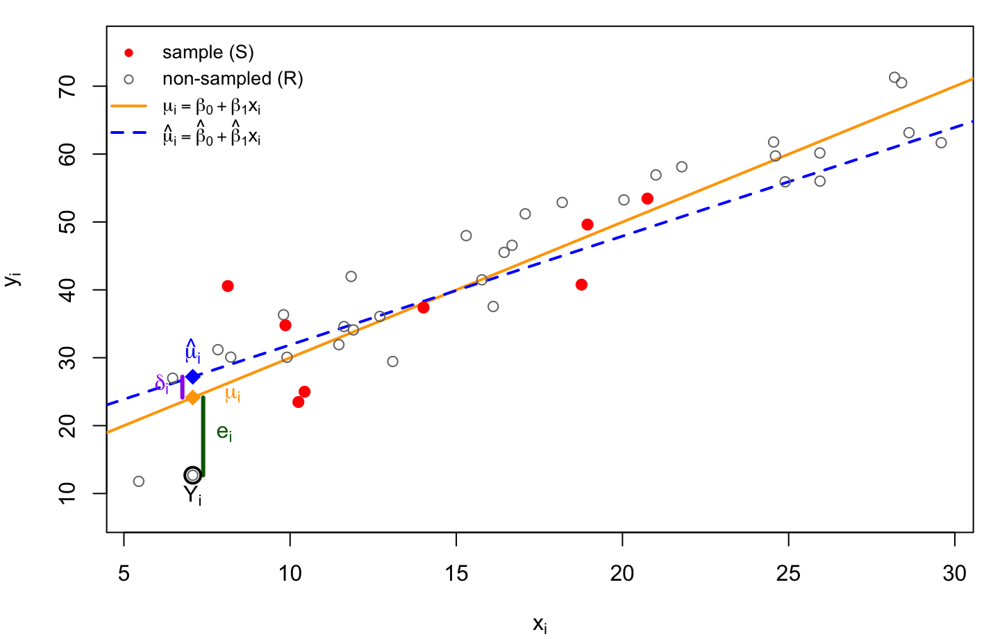
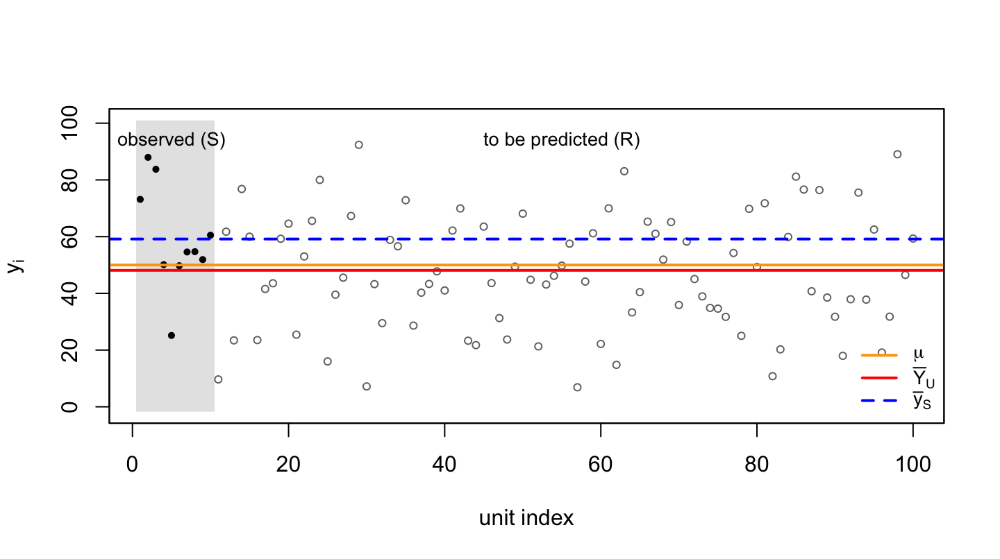

Prediction Theory for Sampling Survey
Sampling is a prediction problem. The sample plays the role of a training set, the non-sampled units play the role of test cases, and a population total is the sum of the observed values and the predictions for the test cases. This chapter states the framework once, in general, and then derives the mean squared prediction error of the estimator of a total for simple random, stratified, ratio and regression estimation as special cases of a single formula.
1 Sampling as prediction
Let \(U=\{1,\dots,N\}\) index a finite population with study variable \(Y_i\), let \(S\subset U\) with \(|S|=n\) denote the observed sample, and let \(R=U\setminus S\) denote the \(N-n\) non-sampled units. The quantities of interest are \[ T=\sum_{i\in U}Y_i=\sum_{i\in S}Y_i+\sum_{i\in R}Y_i,\qquad \bar Y_U=T/N . \] Only the second sum is unknown, so the task is to predict \(Y_i\) for each \(i\in R\).
The prediction approach treats \(Y_1,\dots,Y_N\) as random variables and \(S\) as fixed. All expectations are taken with respect to a model \(\xi\) rather than the randomization distribution. The sampling design enters only through the requirement that selection be uninformative, so that \(\xi\) governs the units in \(R\) as well as those in \(S\). Any auxiliary variables \(x_i\) are treated as known constants. The general working model is \[ \xi:\quad E(Y_i)=\mu_i(\theta),\quad \operatorname{Var}(Y_i)=\sigma_i^2,\quad \operatorname{Cov}(Y_i,Y_j)=0\ (i\neq j), \tag{1}\] where \(\theta\) is an unknown parameter and \(\mu_i(\theta)\) is the mean function, which may depend on \(x_i\). The model errors are \[ e_i=Y_i-\mu_i(\theta),\qquad E(e_i)=0,\quad E(e_i^2)=\sigma_i^2,\quad E(e_ie_j)=0\ (i\neq j). \tag{2}\]
A prediction rule estimates \(\theta\) from the sample by \(\hat\theta=\hat\theta(Y_S)\) and predicts \[ \hat Y_i= \begin{cases} Y_i, & i\in S,\\ \mu_i(\hat\theta), & i\in R, \end{cases} \qquad \hat T=\sum_{i\in U}\hat Y_i=\sum_{i\in S}Y_i+\sum_{i\in R}\mu_i(\hat\theta). \tag{3}\] Observed values are kept as they are, and the fitted mean function is used only for the unobserved units. We take \(\hat\theta\) to be a linear function of \(Y_S\) (given the \(x_i\)), as it is for every estimator in this chapter, so that \(\hat\theta\) is uncorrelated with \(e_i\) for each \(i\in R\).
2 Two ways to judge a prediction
Add and subtract \(\mu_i(\theta)\) in the error for an unobserved unit \(i\in R\): \[ \hat Y_i-Y_i=\underbrace{\mu_i(\hat\theta)-\mu_i(\theta)}_{\delta_i}-\underbrace{\big(Y_i-\mu_i(\theta)\big)}_{e_i}. \tag{4}\] There are two sources of error. The term \(e_i\) is the gap between the unobserved \(Y_i\) and its true mean, which no predictor can remove. The term \(\delta_i\) is the gap between the fitted mean and the true mean, caused by the uncertainty in \(\hat\theta\).
Figure 1 illustrates Equation 4 for a linear mean function \(\mu_i=\beta_0+\beta_1x_i\). The line fitted to the sample (red) differs from the true mean line, and for a non-sampled unit the prediction error splits into \(\delta_i\) and \(e_i\).
Traditional machine learning. A predictive model is judged by the mean squared prediction error of a single case, \(E(\hat Y_i-Y_i)^2\), and by its sum or average over the test cases. Because \(\delta_i\) is uncorrelated with \(e_i\), \[ E(\hat Y_i-Y_i)^2=\sigma_i^2+E(\delta_i^2), \qquad \frac1{N-n}\sum_{i\in R}E(\hat Y_i-Y_i)^2=\frac1{N-n}\sum_{i\in R}\sigma_i^2+\frac1{N-n}\sum_{i\in R}E(\delta_i^2). \tag{5}\] Only the diagonal terms \(E(\delta_i^2)\) enter. This is the familiar split into irreducible noise and estimation error.
Sampling survey. The target is the total, and the quantity of interest is the mean squared prediction error of \(\hat T\), \[ \operatorname{MSPE}(\hat T)=E\big[(\hat T-T)^2\big]=E\Big[\Big(\sum_{i\in R}\hat Y_i-Y_i\Big)^{2}\Big], \qquad \operatorname{MSPE}(\hat{\bar y}_U)=\frac{\operatorname{MSPE}(\hat T)}{N^2}. \tag{6}\] The observed units contribute no error, so by Equation 4 \[ \hat T-T=\sum_{i\in R}\delta_i-\sum_{i\in R}e_i . \tag{7}\] The cross term between \(\sum_R\delta_i\) and \(\sum_Re_i\) vanishes, and the \(e_i\) are uncorrelated, so \[ \operatorname{MSPE}(\hat T) =\underbrace{\sum_{i\in R}\sigma_i^2}_{\text{scatter of the unobserved }Y_i} +\underbrace{E\Big[\Big(\sum_{i\in R}\delta_i\Big)^{2}\Big]}_{\text{uncertainty in }\hat\theta} . \tag{8}\]
The difference from Equation 5 is that the square is taken after summing. Expanding, \[ E\Big[\Big(\sum_{i\in R}\delta_i\Big)^{2}\Big]=\sum_{i\in R}E(\delta_i^2)+\sum_{i\neq j\in R}E(\delta_i\delta_j), \] and the cross terms are the new ingredient. They are not negligible: all \(\delta_i\) are functions of the same \(\hat\theta\), so they are correlated. If the average pairwise correlation is \(\bar\rho\), the cross terms are of order \((N-n)^2\bar\rho\,E(\delta^2)\) against \((N-n)E(\delta^2)\) for the diagonal, and \(\bar\rho\) does not shrink with \(N\) for a model with a fixed number of parameters. The estimation error of a total is therefore dominated by the shared error in \(\hat\theta\), which does not average out across units.
3 The general result
Suppose \(\mu_i(\theta)=x_i^{\top}\theta\) is linear in \(\theta\), which covers all the cases below. Then \[ \sum_{i\in R}\delta_i=\Big(\sum_{i\in R}x_i\Big)^{\top}(\hat\theta-\theta)=t_{x,R}^{\top}(\hat\theta-\theta), \qquad t_{x,R}=\sum_{i\in R}x_i=t_x-t_{x,S},\quad t_x=\sum_{i\in U}x_i,\ t_{x,S}=\sum_{i\in S}x_i , \] a single linear contrast of the estimation error, and Equation 8 becomes \[ \operatorname{MSPE}(\hat T)=\sum_{i\in R}\sigma_i^2+t_{x,R}^{\top}\operatorname{MSE}(\hat\theta)\,t_{x,R} . \tag{9}\] For a nonlinear mean function the same holds approximately, with \(t_{x,R}\) replaced by \(\sum_R\partial\mu_i/\partial\theta\) (delta method).
For the working model \(\sigma_i^2=\sigma^2v_i\) with known weights \(v_i\), the weighted least squares estimator \[ \hat\theta=\big(X_S^{\top}V_S^{-1}X_S\big)^{-1}X_S^{\top}V_S^{-1}y_S,\qquad V_S=\operatorname{diag}(v_i)_{i\in S}, \] is unbiased with \(\operatorname{Var}(\hat\theta)=\sigma^2(X_S^{\top}V_S^{-1}X_S)^{-1}\), and \[ \boxed{\;\operatorname{MSPE}(\hat T)=\sigma^2\Big[\sum_{i\in R}v_i+t_{x,R}^{\top}\big(X_S^{\top}V_S^{-1}X_S\big)^{-1}t_{x,R}\Big]\;} \tag{10}\] The first term is the scatter of the unobserved units, and the second is the cost of estimating \(\theta\) from the sample. The cost is a quadratic form in \(t_{x,R}\), so it is small only when the sample supplies a precise estimate in the direction in which the unobserved units need it. A precise \(\hat\theta\) is not enough: the sample must also resemble the population in the directions \(t_{x,R}\) points to. Each estimator below corresponds to a choice of \(x_i\) and \(v_i\).
In all of these cases \(\hat T=\sum_SY_i+\sum_Rx_i^{\top}\hat\theta\), and the estimate of \(\sigma^2\) is the weighted residual mean square \(\hat\sigma^2=\sum_Sv_i^{-1}(Y_i-x_i^{\top}\hat\theta)^2/(n-p)\) with \(p=\dim\theta\), which gives the variance estimator on substituting into Equation 10.
4 Simple random sampling
With no auxiliary variable every unit has the same mean, \[ \mu_i(\theta)=\mu,\quad x_i=1,\quad v_i=1,\qquad e_i=Y_i-\mu,\quad \bar e_A=|A|^{-1}\sum_{i\in A}e_i, \] and \(\hat\mu=\bar y_S\). The predictor is \[ \hat Y_i= \begin{cases} Y_i, & i\in S,\\ \bar y_S, & i\in R, \end{cases} \qquad \hat T=\sum_{i\in S}Y_i+(N-n)\bar y_S=N\bar y_S , \tag{11}\] so the expansion estimator is a prediction rule that fills in every unobserved unit with the sample mean. The estimation error is common to all units, \(\delta_i=\bar y_S-\mu=\bar e_S\), so the pairwise correlation of the \(\delta_i\) is exactly one and \[ \hat T-T=(N-n)\,\bar e_S-\sum_{i\in R}e_i . \tag{12}\] Both terms have mean zero, so \(\hat T\) is model-unbiased. With \(t_{x,R}=N-n\) and \(X_S^{\top}X_S=n\), Equation 10 gives \[ \operatorname{MSPE}(\hat T)=\sigma^2\Big[(N-n)+\frac{(N-n)^2}{n}\Big]=\frac{N(N-n)}{n}\,\sigma^2 , \tag{13}\] \[ \operatorname{MSPE}(\hat{\bar y}_U)=\frac{\sigma^2}{n}\left(1-\frac{n}{N}\right). \tag{14}\]
Expression Equation 14 is the classical simple-random-sampling variance with \(\sigma^2\) in place of the population variance \(S^2\), obtained without appeal to randomization. Several consequences follow.
- The two terms of Equation 13 are the two sources of error. The term \((N-n)\sigma^2\) is the irreducible scatter of the unobserved units; the term \((N-n)^2\sigma^2/n\) is the cost of estimating \(\mu\) from \(n\) observations and alone decreases with \(n\).
- The per-unit error of Equation 5 is \(\sigma^2(1+1/n)\), barely above \(\sigma^2\) for moderate \(n\), so the estimation error looks negligible for individual prediction. For the total it is not: it is shared by all \(N-n\) unobserved units and accumulates to a factor \((N-n)^2\), whereas the scatter accumulates only to \(N-n\). The ratio of the two terms is \((N-n)/n\).
- The finite-population correction is not an artifact of sampling without replacement. The \(n\) observed units contribute exactly zero to Equation 12, leaving \(N-n\) terms to predict; at \(n=N\) the MSPE is zero.
- If \(\mu\) is known, \(\delta_i=0\) and the predictor \(\hat Y_i=\mu\) for \(i\in R\) has \(\operatorname{MSPE}(\hat T)=(N-n)\sigma^2\), the irreducible error. The cost of not knowing \(\mu\) is the factor \(N/n\) applied to it.
Figure 2 displays one realization of a population under Equation 1 with \(\mu_i=\mu\). Since the labels are uninformative, the sample is placed on the left, shaded grey, and the units to be predicted on the right.

The scatter of the open points about the orange line is the irreducible error. The gap between the orange and blue lines is the estimation error \(\delta_i=\bar e_S\), with root mean square \(\sigma/\sqrt{n}\), the same for every unit in \(R\). The gap between the blue and red lines, scaled by \(N\), is the realized prediction error of the total; Equation 13 states that its root mean square is \(\sigma\sqrt{N(N-n)/n}\).
5 Stratified sampling
Let the population be divided into strata \(h=1,\dots,H\) of sizes \(N_h\), with \(n_h\) units sampled from stratum \(h\), \(R_h\) the non-sampled units and \(S_h\) the sampled units. The model gives each stratum its own mean and variance, \[ \mu_i(\theta)=\mu_h,\quad \sigma_i^2=\sigma_h^2,\qquad i\in\text{stratum }h, \] so \(x_i\) is the vector of stratum indicators and \(\theta=(\mu_1,\dots,\mu_H)\). Then \(\hat\mu_h=\bar y_{S_h}\), and \[ \hat T=\sum_{h=1}^HN_h\bar y_{S_h},\qquad \hat{\bar y}_U=\sum_{h=1}^HW_h\bar y_{S_h},\quad W_h=N_h/N . \] The vector \(t_{x,R}\) has components \(N_h-n_h\), the matrix \(X_S^{\top}X_S\) is diagonal with entries \(n_h\), and the \(\hat\mu_h\) are independent across strata because they depend on disjoint, uncorrelated data. The correlated errors \(\delta_i\) therefore occur only within a stratum, and the cross terms between strata vanish. Applying Equation 9 stratum by stratum, \[ \operatorname{MSPE}(\hat T)=\sum_{h=1}^H\sigma_h^2\Big[(N_h-n_h)+\frac{(N_h-n_h)^2}{n_h}\Big]=\sum_{h=1}^H\frac{N_h(N_h-n_h)}{n_h}\,\sigma_h^2 , \tag{15}\] \[ \operatorname{MSPE}(\hat{\bar y}_U)=\sum_{h=1}^HW_h^2\Big(1-\frac{n_h}{N_h}\Big)\frac{\sigma_h^2}{n_h}. \tag{16}\] This is the classical stratified variance, with \(\sigma_h^2\) playing the role of \(S_h^2\). It is the sum of the \(H\) separate SRS results of Equation 13, each with its own shared estimation error. Substituting \(\hat\sigma_h^2=s_h^2\) gives the usual variance estimator.
Two allocations follow immediately from Equation 16. Under proportional allocation \(n_h=nW_h\), \[ \operatorname{MSPE}(\hat{\bar y}_U)=\Big(\frac1n-\frac1N\Big)\sum_{h=1}^HW_h\sigma_h^2 , \] the SRS result with \(\sigma^2\) replaced by the average within-stratum variance, so that stratification helps whenever the strata means differ. Minimizing Equation 16 over \(n_h\) subject to \(\sum n_h=n\) gives Neyman allocation \(n_h\propto N_h\sigma_h\), with \(\operatorname{MSPE}(\hat{\bar y}_U)=\frac1n\big(\sum_hW_h\sigma_h\big)^2-\frac1N\sum_hW_h\sigma_h^2\).
6 Ratio estimation
Let \(x_i>0\) be an auxiliary variable whose population total \(t_x=\sum_Ux_i\) is known. The ratio model is \[ \mu_i(\beta)=\beta x_i,\qquad \sigma_i^2=\sigma^2x_i , \] that is \(x_i\) in the mean and \(v_i=x_i\) in the variance. Then \(X_S^{\top}V_S^{-1}X_S=\sum_Sx_i=t_{x,S}\), and \[ \hat\beta=\frac{\sum_{i\in S}Y_i}{\sum_{i\in S}x_i}=\frac{\bar y_S}{\bar x_S}, \qquad \hat T=\sum_{i\in S}Y_i+\hat\beta\,t_{x,R}=\hat\beta\,t_x , \] because \(\sum_SY_i=\hat\beta\,t_{x,S}\). This is the ratio estimator of the total. The shared error is \(\delta_i=x_i(\hat\beta-\beta)\), so \(\sum_R\delta_i=t_{x,R}(\hat\beta-\beta)\), with \(t_{x,R}=t_x-t_{x,S}\) and \(\sum_Rv_i=t_{x,R}\). Equation 10 gives \[ \operatorname{MSPE}(\hat T)=\sigma^2\Big[t_{x,R}+\frac{t_{x,R}^2}{t_{x,S}}\Big] =\sigma^2\,\frac{t_x\,(t_x-t_{x,S})}{t_{x,S}} . \tag{17}\] Write \(t_{x,S}=n\bar x_S\) and \(t_x=N\bar x_U\). Then \[ \operatorname{MSPE}(\hat{\bar y}_U)=\frac{\sigma^2\,\bar x_U}{n\,\bar x_S}\Big(\bar x_U-\frac nN\bar x_S\Big). \tag{18}\] In a balanced sample, \(\bar x_S=\bar x_U\), this reduces to \(\frac{\sigma^2\bar x_U}{n}(1-n/N)\): the SRS form with \(\sigma^2\bar x_U\), the variance of an average-size unit, in place of \(\sigma^2\). When \(\bar x_S\) is below \(\bar x_U\) the MSPE is inflated, because the estimate of \(\beta\) is then extrapolated to the larger unobserved units. The variance estimator uses \(\hat\sigma^2=\sum_S(Y_i-\hat\beta x_i)^2/x_i\big/(n-1)\).
7 Regression estimation
With the same auxiliary variable, the straight-line model with constant variance is \[ \mu_i(\theta)=\beta_0+\beta_1x_i,\qquad \sigma_i^2=\sigma^2, \] so \(x_i=(1,x_i)^{\top}\) and \(v_i=1\). The least squares fit gives \[ \hat T=\sum_{i\in S}Y_i+\sum_{i\in R}(\hat\beta_0+\hat\beta_1x_i)=N\big[\bar y_S+\hat\beta_1(\bar x_U-\bar x_S)\big], \] the regression estimator, because the residuals in \(S\) sum to zero. Here \(t_{x,R}=(N-n)(1,\bar x_R)^{\top}\) and \(X_S^{\top}X_S\) has the inverse that gives the standard leverage formula \[ (1,\bar x_R)\,(X_S^{\top}X_S)^{-1}(1,\bar x_R)^{\top}=\frac1n+\frac{(\bar x_R-\bar x_S)^2}{S_{xx,S}}, \qquad S_{xx,S}=\sum_{i\in S}(x_i-\bar x_S)^2 . \] Moreover \((N-n)(\bar x_R-\bar x_S)=N(\bar x_U-\bar x_S)\), so Equation 10 becomes \[ \operatorname{MSPE}(\hat T)=\sigma^2\Big[(N-n)+\frac{(N-n)^2}{n}+\frac{N^2(\bar x_U-\bar x_S)^2}{S_{xx,S}}\Big] =\sigma^2\Big[\frac{N(N-n)}{n}+\frac{N^2(\bar x_U-\bar x_S)^2}{S_{xx,S}}\Big], \tag{19}\] \[ \operatorname{MSPE}(\hat{\bar y}_U)=\sigma^2\Big[\frac1n\Big(1-\frac nN\Big)+\frac{(\bar x_U-\bar x_S)^2}{S_{xx,S}}\Big]. \tag{20}\] The first term is the SRS result Equation 14 with \(\sigma^2\) now the residual variance about the line, which is smaller than the marginal variance of \(Y\) when \(x\) is informative. The second term is a penalty for an unbalanced sample, which vanishes when \(\bar x_S=\bar x_U\). The variance estimator uses \(\hat\sigma^2=\sum_S(Y_i-\hat\beta_0-\hat\beta_1x_i)^2/(n-2)\).
8 Unequal probability sampling with replacement
Suppose \(n\) draws are made with replacement, unit \(i\) being selected with probability \(p_i\) on each draw, and let \(m_i\) be the number of times unit \(i\) is drawn, so \(\sum_Um_i=n\). The sample \(S=\{i:m_i>0\}\) is the set of distinct units and \(R=U\setminus S\). UPS is used when the study variable is roughly proportional to a known size measure \(x_i>0\), so we take the ratio model of Section 6, \[ Y_i=\beta x_i+e_i,\qquad E(e_i)=0,\quad \operatorname{Var}(e_i)=\sigma_i^2=\sigma^2v_i , \] with \(p_i=x_i/t_x\). Nothing in the framework changes: the observed values are kept and each unobserved unit is predicted by \(\hat Y_i=\mu_i(\hat\beta)=\hat\beta x_i\), so \[ \hat T=\sum_{i\in S}Y_i+\hat\beta\,t_{x,R}. \]
For any \(\hat\beta=\sum_Sc_iY_i\) that is linear and model unbiased, \(\sum_Sc_ix_i=1\), the estimation error is \(\delta_i=x_i(\hat\beta-\beta)\), and \[ \hat T-T=t_{x,R}(\hat\beta-\beta)-\sum_{i\in R}e_i . \] Since \(\hat\beta\) uses only units in \(S\), the two parts are uncorrelated and \[ \operatorname{MSPE}(\hat T)=\sum_{i\in R}\sigma_i^2+t_{x,R}^2\sum_{i\in S}c_i^2\sigma_i^2 . \tag{21}\] The selection probabilities can enter in two places: through which units are in \(S\), which sets \(t_{x,S}\), \(t_{x,R}\) and the units contributing to \(\sum_R\sigma_i^2\); and, optionally, through the coefficients \(c_i\) of \(\hat\beta\). The two cases below differ only in the second. Both use \(v_i=x_i\).
Case A: \(\hat\beta\) weighted by the selection probabilities. Weight each distinct unit by \(a_i=m_i/(np_i)\), the inverse selection probability per draw times its multiplicity, in the estimating equation \(\sum_Sa_ix_i(Y_i-\beta x_i)/v_i=0\). With \(p_i=x_i/t_x\) and \(v_i=x_i\) the solution is \[ \hat\beta_p=\frac{\sum_Sa_iY_i}{\sum_Sa_ix_i}=\frac1n\sum_{k=1}^n\frac{y_{(k)}}{x_{(k)}}, \] the average ratio over the \(n\) draws, where \((k)\) is the unit selected on draw \(k\); a unit drawn twice counts twice. Here \(c_i=m_i/(nx_i)\), and Equation 21 gives \[ \operatorname{MSPE}(\hat T_p)=\sigma^2\Big[t_{x,R}+\frac{t_{x,R}^2}{n^2}\sum_{i\in S}\frac{m_i^2}{x_i}\Big]. \tag{22}\] The Hansen–Hurwitz estimator is \(\frac1n\sum_ky_{(k)}/p_{(k)}=\hat\beta_p\,t_x\), which applies \(\hat\beta_p\) to the sampled units as well; \(\hat T_p\) keeps their observed values instead.
Case B: \(\hat\beta\) without weights. Fit the ratio model to the distinct units by weighted least squares, ignoring the \(p_i\) and \(m_i\). This is Section 6 with \(S\) the distinct units: \(\hat\beta=\sum_SY_i/t_{x,S}\), \(c_i=1/t_{x,S}\), and \[ \operatorname{MSPE}(\hat T)=\sigma^2\Big[t_{x,R}+\frac{t_{x,R}^2}{t_{x,S}}\Big]. \tag{23}\]
Comparison. The irreducible terms are equal. For the estimation terms, the Cauchy–Schwarz inequality gives \[ n^2=\Big(\sum_{i\in S}\frac{m_i}{\sqrt{x_i}}\sqrt{x_i}\Big)^2\le\sum_{i\in S}\frac{m_i^2}{x_i}\cdot t_{x,S}, \qquad\text{so}\qquad \frac1{n^2}\sum_{i\in S}\frac{m_i^2}{x_i}\ \ge\ \frac1{t_{x,S}}, \] with equality only when \(m_i\propto x_i\). Case A is therefore never better than Case B. This is the Gauss–Markov theorem: among linear unbiased \(\hat\beta\), the weighted least squares coefficients \(c_i\propto x_i/\sigma_i^2\) minimize \(\sum_Sc_i^2\sigma_i^2\), and the design weights move \(c_i\) away from them because the multiplicities \(m_i\) carry no information about \(\beta\).
The selection probabilities therefore matter through which units are observed. Each \(\sigma_i\) is fixed, but the irreducible term \(\sum_R\sigma_i^2=\sigma^2t_{x,R}\) is a sum over the units left unobserved, so drawing the large units lowers it; and a large \(t_{x,S}\) also lowers the estimation term of Equation 23. This is why \(p_i\propto x_i\) is a good design under the ratio model. Using the \(p_i\) a second time, as weights in \(\hat\beta\), only adds estimation error when the model holds. Its value is protection against a wrong model: \(\hat\beta_p\) estimates the population ratio \(\sum_UY_i/t_x\) whether or not the model is true, which the unweighted fit does not guarantee.
9 Summary
| Estimator | \(\mu_i(\theta)\) | \(v_i\) | \(t_{x,R}\) | \(\operatorname{MSPE}(\hat T)/\sigma^2\) |
|---|---|---|---|---|
| SRS | \(\mu\) | \(1\) | \(N-n\) | \(\dfrac{N(N-n)}{n}\) |
| Stratified | \(\mu_h\) | \(1\) (per stratum \(\sigma_h^2\)) | \((N_h-n_h)_h\) | \(\sum_h\dfrac{N_h(N_h-n_h)}{n_h}\) |
| Ratio | \(\beta x_i\) | \(x_i\) | \(t_{x,R}\) | \(\dfrac{t_x(t_x-t_{x,S})}{t_{x,S}}\) |
| Regression | \(\beta_0+\beta_1x_i\) | \(1\) | \((N-n)(1,\bar x_R)\) | \(\dfrac{N(N-n)}{n}+\dfrac{N^2(\bar x_U-\bar x_S)^2}{S_{xx,S}}\) |
In every case the MSPE is the scatter of the unobserved units, \(\sum_R\sigma_i^2\), plus a cost of estimating \(\theta\) that is a quadratic form in the total auxiliary information \(t_{x,R}\) still to be predicted. The ratio and regression estimators do not remove the shared error; they change the model so that \(\sigma^2\) is the residual variance rather than the marginal one, and they pay a penalty when the sample is unrepresentative in \(x\).
The UPS predictors of Section 8 are the ratio row with \(S\) the distinct units drawn; weighting \(\hat\beta\) by the selection probabilities replaces \(1/t_{x,S}\) in the estimation term by the larger \(\sum_Sm_i^2/x_i\,/\,n^2\) (Equation 22).
10 Numerical check
The formulas can be checked by simulating many populations from the model, drawing a sample, and comparing the empirical mean squared error of \(\hat T-T\) with the formula. The sample is fixed across replications, which is the conditioning of the prediction approach.
Code
set.seed(1)
N <- 200; n <- 20; B <- 20000
x <- runif(N, 1, 10) # known auxiliary variable
S <- sample(N, n) # one fixed sample
R <- setdiff(seq_len(N), S)
strat <- rep(1:2, each = N / 2) # two strata of equal size
sg <- c(1, 3) # stratum sd's
nh <- table(factor(strat[S], 1:2)); Nh <- table(strat)
sim <- function(gen, est) {
err <- replicate(B, { y <- gen(); est(y) - sum(y) })
mean(err^2)
}
## SRS: Y ~ (mu, sigma^2)
sigma <- 2
srs_emp <- sim(function() rnorm(N, 10, sigma), function(y) N * mean(y[S]))
srs_th <- sigma^2 * N * (N - n) / n
## Stratified: stratum means and sd's differ
str_emp <- sim(function() rnorm(N, c(10, 20)[strat], sg[strat]),
function(y) sum(Nh * tapply(y[S], factor(strat[S], 1:2), mean)))
str_th <- sum(sg^2 * Nh * (Nh - nh) / nh)
## Ratio: mean beta * x, variance sigma^2 * x
beta <- 2
rat_emp <- sim(function() rnorm(N, beta * x, sigma * sqrt(x)),
function(y) sum(x) * sum(y[S]) / sum(x[S]))
rat_th <- sigma^2 * sum(x) * (sum(x) - sum(x[S])) / sum(x[S])
## Regression: straight line, constant variance
reg_emp <- sim(function() rnorm(N, 3 + beta * x, sigma),
function(y) { f <- lm(y[S] ~ x[S]); N * (mean(y[S]) + coef(f)[2] * (mean(x) - mean(x[S]))) })
reg_th <- sigma^2 * (N * (N - n) / n + N^2 * (mean(x) - mean(x[S]))^2 / sum((x[S] - mean(x[S]))^2))
## UPS with replacement, p_i proportional to x: ratio predictor, case A (p-weighted) and case B (unweighted)
m <- tabulate(sample(N, n, replace = TRUE, prob = x), N) # one fixed set of draws
Su <- which(m > 0); txR <- sum(x[-Su]); txS <- sum(x[Su])
upa_emp <- sim(function() rnorm(N, beta * x, sigma * sqrt(x)),
function(y) sum(y[Su]) + mean(rep(y[Su] / x[Su], m[Su])) * txR)
upa_th <- sigma^2 * (txR + txR^2 * sum(m[Su]^2 / x[Su]) / n^2)
upb_emp <- sim(function() rnorm(N, beta * x, sigma * sqrt(x)),
function(y) sum(y[Su]) + sum(y[Su]) / txS * txR)
upb_th <- sigma^2 * (txR + txR^2 / txS)
round(rbind(SRS = c(simulated = srs_emp, formula = srs_th),
Stratified = c(str_emp, str_th),
Ratio = c(rat_emp, rat_th),
Regression = c(reg_emp, reg_th),
`UPS A: p-weighted` = c(upa_emp, upa_th),
`UPS B: unweighted` = c(upb_emp, upb_th))) simulated formula
SRS 7246 7200
Stratified 10966 11083
Ratio 40628 40248
Regression 7239 7207
UPS A: p-weighted 40757 40962
UPS B: unweighted 35544 36050